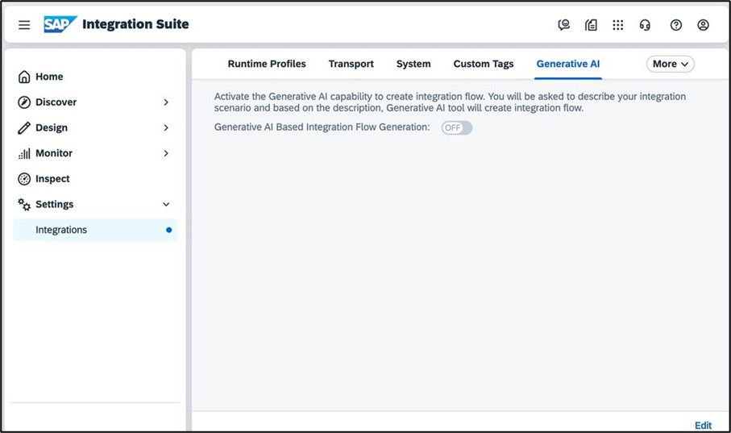
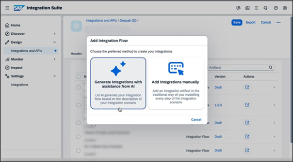
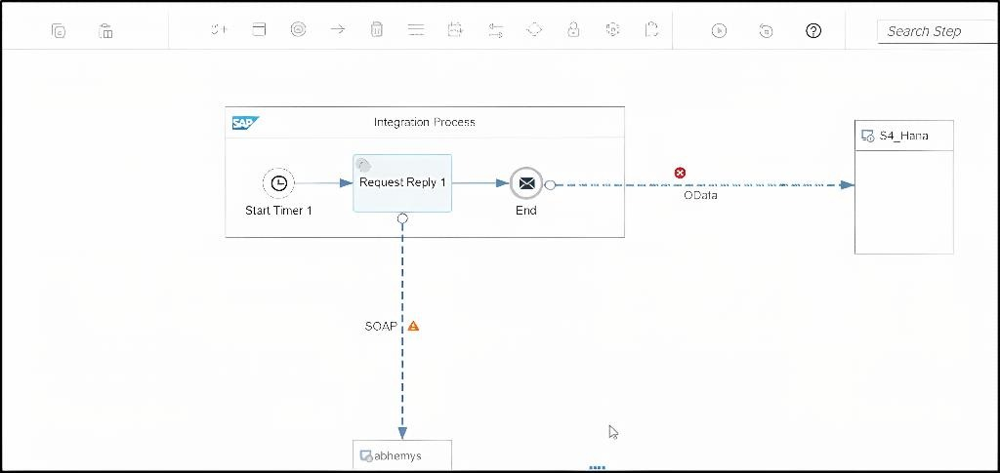
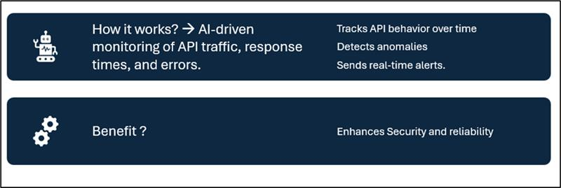

AI-Based Integration Flow Generation
AI-driven creation of integration flows in SAP Integration Suite allows developers to quickly build interfaces by simply describing what they want to integrate.
The system intelligently generates the iFlow, including all necessary adapters, mappings, and connectivity — significantly reducing manual effort.
This accelerates implementation, enhances accuracy, and makes integration more accessible even to non-technical users.



Groovy Script Optimization
Generative AI analyzes Groovy scripts to detect inefficiencies, suggest best practices, and generate optimized code snippets.
Developers receive recommendations to enhance structure, performance, and maintainability, helping ensure scripts meet enterprise standards.
API Anomaly Detection
Using machine learning, SAP Integration Suite detects abnormal API behavior such as spikes in errors, latency, or usage patterns.
This allows for early warning signals, operational stability, and continuous monitoring across connected systems.

Key Features & Benefits
- ✔ AI-powered generation of integration flows
- ✔ Ready-to-use templates for standard use cases
- ✔ HTTP adapters support even when systems aren’t predefined
- ✔ Script quality suggestions with optimized code
- ✔ Fully automated Groovy code improvements
- ✔ Real-time anomaly alerts across API landscapes
- ✔ Increased productivity, reduced manual tasks